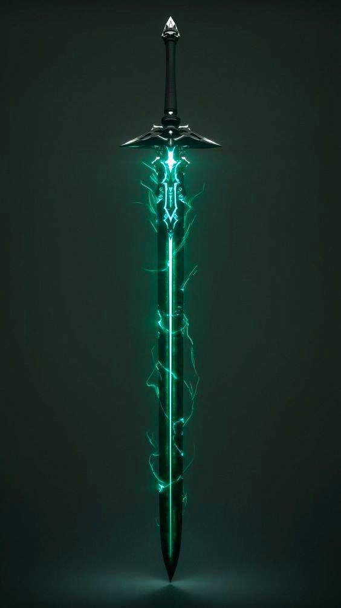
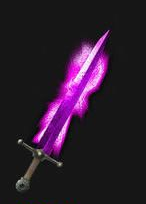

EQUIPMENT

Memento Mori

Drain Ethereal
EtherealBefore thought learned to think itself, when Opriser first decided reality was insufficient, this weapon came into being as the manifestation of his sovereign will. Born from the fusion of the Drain Sword's consumptive supremacy and the Ethereal Sword's dimensional transcendence, it represents the moment when possibility itself was deemed inadequate.
The Drain Sword embodies Opriser's nature as the living embodiment of "overpowered" - it doesn't simply drain victims, but asserts absolute dominion over their very right to exist. Each strike declares that the target's power, their essence, their potential belongs to the Sovereign of Supremacy by divine right. It consumes not through hunger, but through the sheer audacity of claiming ownership over all energy that dares exist.
The Ethereal Sword allows this supreme authority to transcend every boundary reality attempts to impose. It phases through dimensions not by bypassing them, but by simply refusing to acknowledge their authority to restrict its movement. The blade exists everywhere simultaneously because Opriser's supremacy recognizes no limitation on where his power may manifest.
When wielded by the Sovereign of Supremacy, the weapon becomes a declaration of war against insufficiency itself. It cuts through enemies, obstacles, and concepts with equal contempt, draining their power while asserting that all strength belongs rightfully to Opriser. Each swing is both an execution and a coronation - ending the victim while crowning their stolen power as another jewel in his infinite supremacy.
It is violence as first emotion made manifest - pure, undiluted dominance that emerged when consciousness first chose to be overpowered.